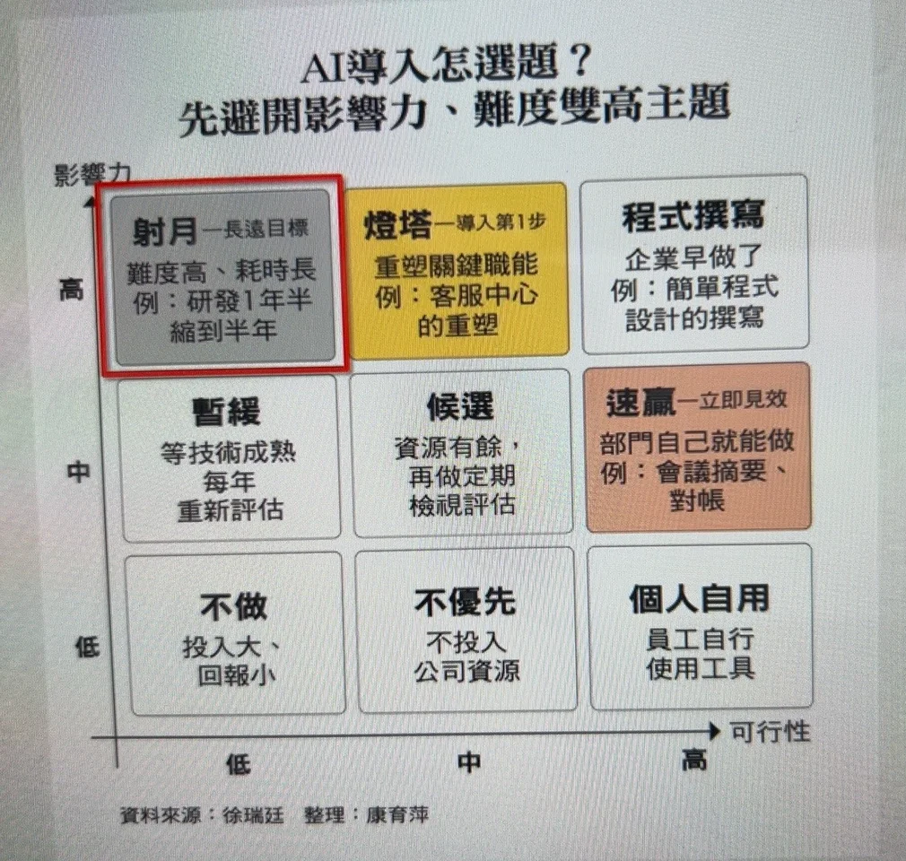
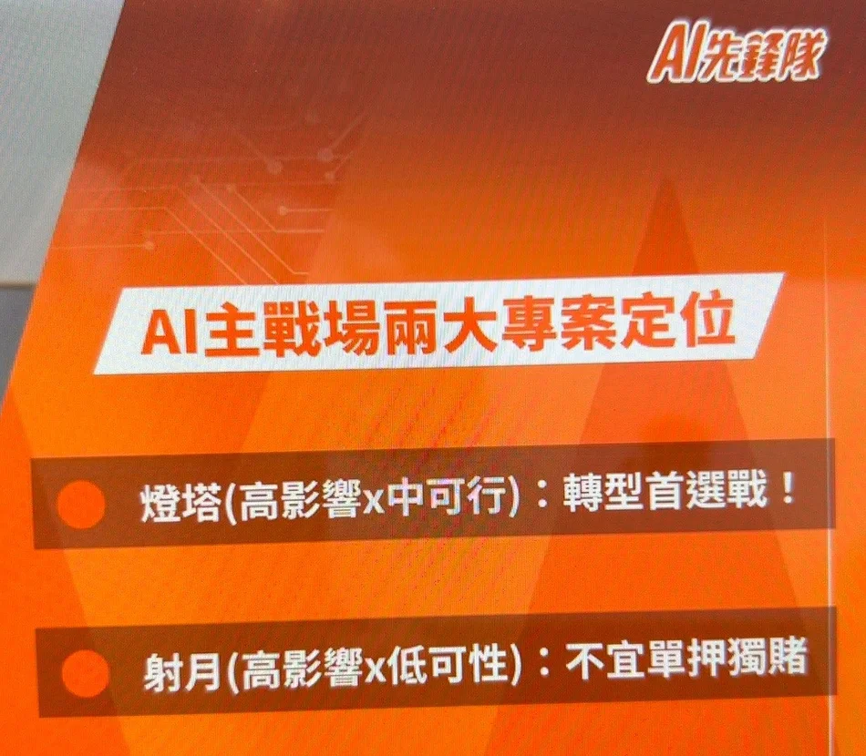

看完商業周刊《AI先鋒隊》訪問徐瑞廷，再對照 BCG 的資料後，我一直在想：大家每天都在用 AI，為什麼公司還是說不出到底差在哪裡？這篇是我的心得。我挑了兩張特別停下來看的圖，也試著把它們放進一個專案裡想一遍。
員工先試出可能，主管把它變成公司的做法
一個人用 AI 整理資料、寫摘要，少花半小時，很有價值。前線願意試，我反而會鼓勵，因為他們最知道哪裡在浪費時間。但十個人各省半小時，公司不會自動多出五個能拿去接單的小時。這些時間如果散在不同的人、不同的流程，下一關還是一樣慢，財報自然很難看出差異。
換成 CEO 的位置，我會先拿一個真實案件，跟前線一起走一遍：AI 現在能做什麼？還有哪些地方沒辦法交給它？以前排隊等三天的工作，如果不再需要等，下一站要怎麼接？CEO 不必比工程師更懂模型，但如果沒有親手看過 AI 能做什麼、在哪裡會出錯，就很難想像公司有哪一段工作可以重新設計。
先跑一個燈塔，別把全部資源押在射月


我把「燈塔」理解成先挑一個有代表性的專案，把範圍內的工作從頭到尾重新走一遍。選一段對公司有影響、現有條件又有機會做成的流程，不只是替其中一步裝上一個 AI 工具。這個專案跑通後，第二個團隊最好能借用它的資料規格、審核方式和驗收指標，而不是重頭再做一次。
「射月」是拉高眼光的長期目標。像圖中把一年半的研發縮到半年，牽涉需求決策、驗證、供應商與交付，不能靠某一個模型或一次上線就做到。我會把它拆成幾段，各自驗證能省掉哪一段等待、品質能不能維持，再決定下一階段要投多少。
為什麼 70% 落在人和流程？
BCG 用 10／20／70 提醒管理者：大約 10% 的心力放在演算法，20% 放在技術和資料，70% 放在人、組織與流程。這不是預算硬比例，也不是 ROI 的算式。它讓我想到，模型能不能產出答案是一關，大家能不能用同一套方式交接、審核、處理例外，才決定新流程能不能留下來。
換成一個專案：從客戶需求進來，到報價送出去
假設一間公司，客戶送來需求後，平均五天才拿到報價。個人試用可能是用 AI 寫一封比較快的回信。燈塔專案會選一條產品線，從讀取需求、找出缺件、查核准規格、草擬報價，到最後由人簽核，把一整段跑通。以下是我會怎麼分工：
- CEO：指定一位對整段流程負責的人，給業務、產品和財務共同的時程與資源，明定這條產品線要走新流程、何時檢討。要求的是落地和結果，不是每人每天要用多少次 AI。
- 工程師：和使用者畫出現況、挑代表性案例做測試，接上核准的資料來源。把缺件、價格例外、無法驗證的答案明確交回人處理，留下來源、版本與決策紀錄。
- 一起驗收：先量導入前的端到端時間、錯報率和重工，再跟相近案件比。把模型、整合、人工覆核和維護都算進成本；另外確認省下來的產能，究竟拿去多處理案件、減少外包，還是根本還沒用上。
上述五天是舉例，不是已驗證的成果。我會先看報價有沒有更快、錯誤有沒有增加；有了穩定結果，再看多處理的案件有沒有帶來實際成交或可確認的成本下降。省下工時值得記下，但不能直接當成省下的錢。
我最想留下的，是員工從下往上找機會，CEO 從上往下把新的做法變成公司日常。兩邊少一邊都很難走遠。第一個燈塔真正值得慶祝的時候，是第二個團隊也能照著它跑起來。